<ion-header>
  <ion-toolbar color="primary">
    <ion-title>chat-app</ion-title>
    <ion-buttons slot="end">
      <ion-spinner name="lines" color="light" *ngIf="!users"></ion-spinner>
    </ion-buttons>
  </ion-toolbar>
</ion-header>

<ion-content fullscreen>
<ion-card>
  <ion-card-header>
    <ion-card-title color="success">
      <strong>List of Users</strong>
    </ion-card-title>
  </ion-card-header>

  <ion-card-content>

  <ion-list>
  <!-- async unwarp [object] [object] -->
 
  <!-- users.key !== uid: exculeed the logging in  user  -->
  <div *ngFor="let user of users">
    <ion-item (click)="openChat(user.key)" *ngIf="user.key !== uid">
      <ion-avatar *ngIf="!user.picture" slot="start">
        
      </ion-avatar>
      <ion-avatar  slot="start">
        
      </ion-avatar>
      <ion-label>
        <h2>{{user.firstName}}</h2>
        <p>{{user.email}}</p>
      </ion-label>
    </ion-item> 
  </div>

  </ion-list>
</ion-card-content>
</ion-card>
</ion-content>
